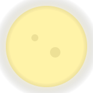
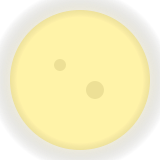

The Quiet Path
Mist curled at our ankles; the stars winked like secrets. The trees parted—just a little—as though inviting us in.
A CSS-Only Halloween tale

Choose Page 1 to begin. Each page ends with a Next button—like turning a real book.
On All Hallows’ Eve, the wind sewed hush between doorways, and jack-o’-lanterns grinned with far too many teeth. A single lantern sputtered in the square, throwing long, shivering shadows.
“Follow the glow,” said a voice you couldn’t place. “But whatever you do, don’t look back.”